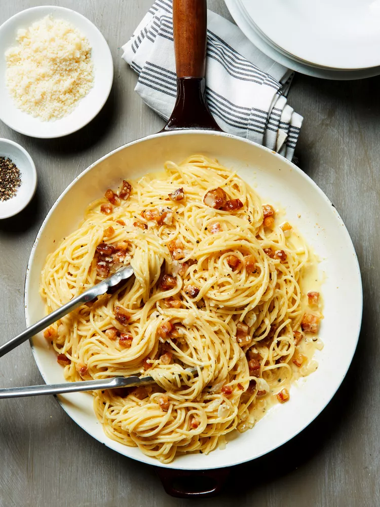

Home style carbonara

Overview
When it comes to comfort food, few dishes come close to this hearty pasta dish.
And the fact that you can make it under 30 minutes at home makes it especially good
Ingredients
- 200-250 grams of spaghetti
- 150-200 grams of pancetta or bacon, finely chopped
- ½ cup chopped onion
- 3 cloves garlic, minced
- 4-5 chicken eggs
- ¼ cup heavy cream (optional)
- 1 cup finely shredded Parmigiano-Reggiano or Parmesan cheese
- ½ teaspoon black pepper
Instructions
- In a large pot cook pasta according to package directions.
Drain, reserving 1/2 cup of the pasta water. Return pasta to pan; cover and keep warm.
- Meanwhile, in a large pan cook pancetta over medium heat for 1 minute.
- Add onion and garlic. Cook over medium heat 5 minutes or until onion is tender, stirring occasionally.
- Add pasta on the pan and let get in all the flavours, toss gently over medium heat 1 to 2 minutes to coat.
- Meanwhile, in a small bowl combine egg and cream. Stir in cheese and pepper.
- Remove pan from heat. Add egg mixture and 1/4 cup of the pasta water; toss to coat.
If needed, add additional pasta water to maintain creamy consistency.
- Serve immediately, put pasta on the plate, pepper it and pour a little bit of olive oil.